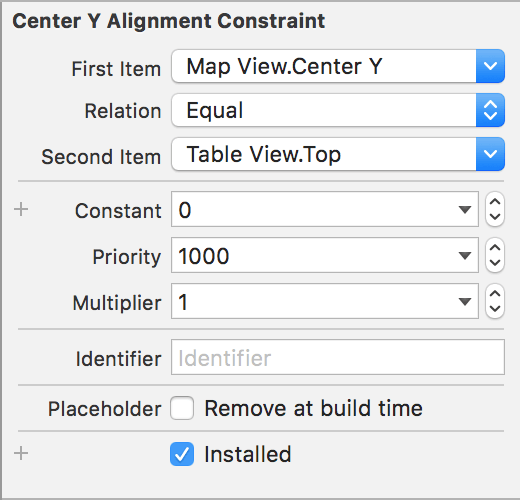

Step 3: Add UITableView to UI in IB
This step is really short, we are going to add a UITableView over our MK Map View and make some customization.
Go to your storyboard and add the component Table View over your map view. Add the following constraints to the new table view:
- Vertical spacing to bottom layout guide
- Trailing space to container margin
- Leading space to container margin
If you don't remember how to do this, check back the Step 1: Layout Map UI in Interface Builder. Here we are adding a new type of constraint: the alignment.
Ctrl drag your mouse from the table view to the map view and select the option Center vertically and modify the option of the constraint to the following:

And don't forget to update the frame if needed (xCode will provide a warning in the Document Outline if necessary).
Also add the component Table View Cell to your Table View with 2 UILabel for the title and subtitle
Finally, we will customize our table view programmatically, add the following to your POIViewController within the viewDidLoad scope:
let visualEffect = UIBlurEffect(style: .Light)
let visualEffectView = UIVisualEffectView(effect: visualEffect)
tableView.backgroundView = visualEffectView
This is just a blur effect on the background of the table.